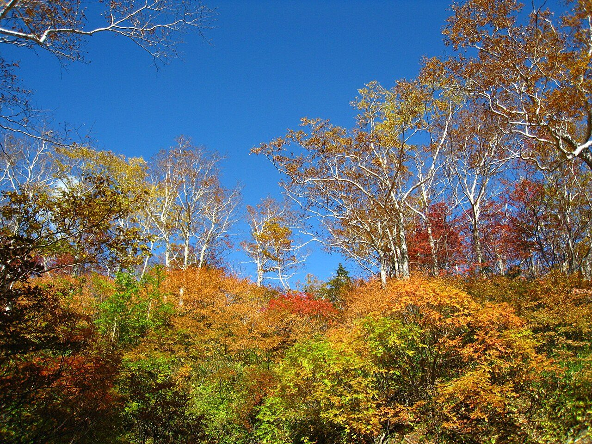

Voice
口コミ(イメージ例)
ここに並べるのは、喫茶店という業種から自然に想像できる声を、制作側が創作した「イメージ例」です。実在のお客様の投稿ではありません。実際の口コミは、お店の許可をいただいたうえで差し替えます。
イメージ例駅からの帰り道に、ふっと入りたくなる雰囲気だと思う。席に着くと、肩の力が抜けていく気がする。
イメージ例のんびり本を開いて、時間を気にせず過ごせそう。秋の夕方に寄ったら、きっと心地よい一杯になるのではないかな。
イメージ例静かで、落ち着いた時間が流れていると思う。誰かと話すのも、ひとりで過ごすのも似合う場所という印象を持つ。
